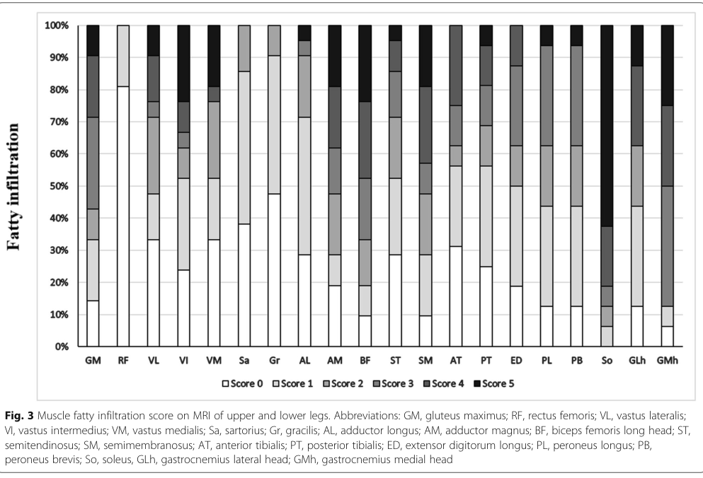

Triglyceride Storage Disease Type 2 (TSD2) / Neutral Lipid Storage Disease with Myopathy (NLSDM) — Research Report
Executive summary
Triglyceride Storage Disease Type 2 corresponds in current usage to PNPLA2 (ATGL) deficiency, most commonly referred to in the clinical genetics/neuromuscular literature as Neutral Lipid Storage Disease with Myopathy (NLSDM) (OMIM/MIM #610717). It is an autosomal recessive lipid-droplet neutral lipid storage disorder characterized by skeletal myopathy with variable cardiomyopathy and multisystem lipid accumulation. Recent research (2024) has strengthened mechanistic understanding of ATGL regulation by lipid-droplet proteins and has clarified clinical cardiomyopathy features and outcomes in compiled case series.
Table (click to expand)
| Concept | Key data points |
|---|---|
| Identifier | Neutral lipid storage disease with myopathy (NLSDM); Triglyceride storage disease type 2; OMIM/MIM #610717 (missaglia2025casereportpathogenic pages 1-2, missaglia2022neutrallipidstorage pages 1-2) |
| Synonym | PNPLA2-related neutral lipid storage disease; ATGL deficiency; disease associated with PNPLA2 mutations can also overlap conceptually with triglyceride deposit cardiomyovasculopathy in cardiac-predominant cases (missaglia2025casereportpathogenic pages 1-2, samukawa2020neutrallipidstorage pages 3-4, hirano2025longtermsurvivaland pages 7-9) |
| Inheritance | Autosomal recessive; homozygous or compound heterozygous PNPLA2 variants reported (33 homozygous families and 7 compound heterozygous families in Chinese cohort) (missaglia2025casereportpathogenic pages 1-2, zhang2019neutrallipidstorage pages 1-2) |
| Gene | PNPLA2 encodes adipose triglyceride lipase (ATGL), the key enzyme initiating intracellular triglyceride hydrolysis (missaglia2025casereportpathogenic pages 1-2, luan2025clinicopathologicalgeneticfeaturesof pages 1-2) |
| Pathogenesis | Impaired ATGL activity causes defective lipid-droplet triglyceride breakdown and neutral lipid accumulation in skeletal muscle, heart, liver, leukocytes, and other tissues; complete loss of ATGL protein documented in severe cases (missaglia2022neutrallipidstorage pages 1-2, missaglia2025casereportpathogenic pages 1-2) |
| Key phenotypes | In Chinese cohort: pure skeletal myopathy 18/45, skeletal myopathy + cardiomyopathy 21/45, pure cardiomyopathy 4/45, asymptomatic hyperCKemia 2/45; right upper limb weakness was early/prominent in 61.5% (zhang2019neutrallipidstorage pages 1-2) |
| Key diagnostic hallmarks | Jordan anomaly in all 31/31 tested in Chinese cohort; myopathic EMG in 39/43 (90.7%); elevated CK common (zhang2019neutrallipidstorage pages 4-6, luan2025clinicopathologicalgeneticfeaturesof pages 1-2) |
| MRI pattern | Selective fatty infiltration of long head of biceps femoris, semimembranosus, adductor magnus, soleus, and medial gastrocnemius; rectus femoris, gracilis, sartorius, anterior/posterior tibialis relatively spared (zhang2019neutrallipidstorage pages 6-9, zhang2019neutrallipidstorage pages 2-4) |
| Pathology stats | Lipid droplet accumulation in all biopsied patients in Chinese cohort; rimmed vacuoles in 21/42 (50.0%) in that cohort; literature summary found muscle lipid accumulation in 52/53 (98%) and rimmed vacuoles in 11/53 (21%) (zhang2019neutrallipidstorage pages 4-6, samukawa2020neutrallipidstorage pages 3-4) |
| Variant spectrum hotspot | Chinese cohort: 23 distinct PNPLA2 mutations; c.757+1G>T hotspot 24/80 alleles (30.0%); c.245G>A 9/80, c.187+1G>A 8/80; missense variants mostly in patatin domain (zhang2019neutrallipidstorage pages 6-9, zhang2019neutrallipidstorage pages 1-2) |
| Treatment evidence | No established disease-specific therapy; low-fat + MCT diet lowered CPK from 2640 to 1424 U/L in one long-term case but myopathy still progressed; another 2024 case reported improved limb strength and resolution of dysarthria after medium-chain fatty acid diet (missaglia2022neutrallipidstorage pages 1-2, yang2024twopnpla2heterozygous pages 1-3) |
| Clinical trials | Bezafibrate phase 4 trial NCT01527318: 400 mg/day for 28 weeks, completed, focused on muscle/cardiac/insulin-sensitivity outcomes; CNT-02 open-label study NCT02830763: 2.0 g orally three times daily up to 6 months, terminated; international registry NCT02918032 recruiting, target enrollment 120, primary outcome all-cause mortality from diagnosis (NCT01527318 chunk 1, NCT02830763 chunk 1, NCT02918032 chunk 1) |
Table: This table condenses the most actionable disease knowledge for Triglyceride Storage Disease Type 2 / NLSDM, including identifiers, genetics, hallmark findings, cohort statistics, and current trial activity. It is useful as a quick-reference artifact for building a disease knowledge base entry.
Note on PMIDs: The retrieved full-text snippets used by the tools did not include PubMed identifiers; therefore PMIDs cannot be reliably provided from tool-supported evidence in this run. Where possible, DOIs/URLs and publication months/years are provided.
1. Disease information
1.1 What is the disease?
NLSDM is an inborn error of neutral lipid metabolism caused by deficient intracellular triglyceride hydrolysis due to loss of function of adipose triglyceride lipase (ATGL) encoded by PNPLA2, leading to neutral lipid (triacylglycerol) accumulation in multiple tissues (skeletal muscle prominently). (missaglia2022neutrallipidstorage pages 1-2, missaglia2025casereportpathogenic pages 1-2)
1.2 Key identifiers
- OMIM/MIM: 610717 (explicitly stated as OMIM #610717 in a 2025 Frontiers in Genetics case report; also cited as MIM 610717 in a 2022 case report/follow-up). (missaglia2025casereportpathogenic pages 1-2, missaglia2022neutrallipidstorage pages 1-2)
- Other identifiers (Orphanet / MeSH / ICD / MONDO): not explicitly present in the retrieved evidence snippets and therefore not asserted here.
1.3 Synonyms / alternative names
Commonly used names in retrieved sources include: - Neutral lipid storage disease with myopathy (NLSDM) (missaglia2025casereportpathogenic pages 1-2, missaglia2022neutrallipidstorage pages 1-2) - ATGL deficiency / PNPLA2 deficiency (missaglia2025casereportpathogenic pages 1-2, boutagy2024dynamicmetabolismof pages 1-2) - Conceptual overlap with triglyceride deposit cardiomyovasculopathy (TGCV) for cardiac-predominant PNPLA2 deficiency presentations. (samukawa2020neutrallipidstorage pages 3-4, hirano2025longtermsurvivaland pages 7-9)
1.4 Evidence source type
The clinical disease characterization in this report is based on aggregated disease-level resources derived from case reports, cohort studies, and literature reviews, notably: - A multicenter cohort of 45 patients (China) (Orphanet J Rare Dis, Oct 2019). (zhang2019neutrallipidstorage pages 1-2, zhang2019neutrallipidstorage pages 2-4) - A literature summary of 56 patients in a case report/review (European Neurology, Jun 2020). (samukawa2020neutrallipidstorage pages 3-4) - Multiple recent case reports/reviews (2022–2025). (missaglia2022neutrallipidstorage pages 1-2, yang2024twopnpla2heterozygous pages 1-3, wang2024dilatedcardiomyopathycaused pages 1-2)
2. Etiology
2.1 Primary causal factors
- Genetic: biallelic pathogenic variants in PNPLA2 causing loss or severe impairment of ATGL activity are the established cause. (missaglia2025casereportpathogenic pages 1-2, missaglia2022neutrallipidstorage pages 1-2)
2.2 Risk factors
- Genetic risk factors: being homozygous or compound heterozygous for pathogenic PNPLA2 variants. In a Chinese cohort, most families had homozygous variants (33 families) and the remainder compound heterozygous (7 families). (zhang2019neutrallipidstorage pages 1-2)
- Consanguinity: 13/45 patients in the Chinese cohort were born to consanguineous parents, consistent with increased risk for autosomal recessive disorders. (zhang2019neutrallipidstorage pages 1-2)
2.3 Protective factors
No specific protective genetic or environmental factors were identified in the retrieved clinical evidence.
2.4 Gene–environment interactions
A multicenter cohort explicitly noted weak genotype–phenotype correlation and suggested that environmental factors may contribute to phenotypic variability, but specific GxE factors were not enumerated in the retrieved snippets. (zhang2019neutrallipidstorage pages 1-2)
3. Phenotypes
3.1 Core phenotype spectrum (with statistics)
Large multicenter Chinese cohort (n=45): - Limb weakness at presentation: 36/45 (80%). (zhang2019neutrallipidstorage pages 2-4) - Phenotype distribution at diagnosis: - Pure skeletal myopathy: 18/45 (40.0%) - Skeletal myopathy + cardiomyopathy: 21/45 (46.7%) - Pure cardiomyopathy: 4/45 (8.9%) - Asymptomatic hyperCKemia: 2/45 (4.4%) (zhang2019neutrallipidstorage pages 2-4) - “Right upper limb weakness” was an early prominent feature in 61.5%. (zhang2019neutrallipidstorage pages 1-2) - Median age at onset: 33 years (IQR 26–40); onset <20 years in 5 patients. Median time to diagnosis: 6 years (IQR 3–9). (zhang2019neutrallipidstorage pages 2-4)
Literature summary within a case report/review (compiled series): - Proximal-predominant weakness: 31/44 (70%) - Asymmetric involvement: 30/38 (79%), often right>left (25/30; 83%) (samukawa2020neutrallipidstorage pages 3-4) - Cardiomyopathy: 30/56 (54%) - Diabetes: 13/44 (30%) - Hyperlipidemia: 17/47 (36%) - Hearing impairment: 9/53 (17%) - Acute pancreatitis: 6/36 (17%) (samukawa2020neutrallipidstorage pages 3-4)
3.2 Cardiomyopathy-specific phenotype (recent synthesis, 2024)
A 2024 cardiomyopathy-focused case report/review states cardiac involvement in ~40–50% of NLSDM patients, usually adult-onset progressive heart failure mimicking dilated or hypertrophic cardiomyopathy. (wang2024dilatedcardiomyopathycaused pages 1-2)
In a compiled set of cardiomyopathy cases, severe outcomes were reported, including cardiac death/transplant in ~21.6% (11/51) (reported in the review’s summarized cohort). (wang2024dilatedcardiomyopathycaused pages 4-5)
3.3 Disease course and progression
Longitudinal follow-up suggests progressive skeletal myopathy may continue despite dietary interventions; in one patient, CK decreased with diet but weakness progressed over years. (missaglia2022neutrallipidstorage pages 1-2)
3.4 Quality of life impact
Formal QoL instruments (e.g., SF-36, EQ-5D) were not reported in retrieved snippets. Functional impacts inferred from progressive weakness, atrophy, and heart failure outcomes in cohorts/reviews. (zhang2019neutrallipidstorage pages 2-4, wang2024dilatedcardiomyopathycaused pages 4-5)
3.5 Suggested HPO terms (non-exhaustive)
Based on described phenotypes: - Muscle weakness (proximal/distal), muscle atrophy, scapular winging, neck flexor weakness, hyperCKemia, myopathic EMG, cardiomyopathy (dilated/hypertrophic), heart failure, hepatic steatosis/hepatomegaly, sensorineural hearing loss, diabetes mellitus, rhabdomyolysis (episodic in some lipid myopathies; less directly quantified here). (zhang2019neutrallipidstorage pages 2-4, samukawa2020neutrallipidstorage pages 3-4, wang2024dilatedcardiomyopathycaused pages 1-2, missaglia2022neutrallipidstorage pages 1-2)
4. Genetic / molecular information
4.1 Causal gene
- PNPLA2 encodes ATGL, the key intracellular TAG lipase initiating TAG→DAG + free fatty acids. (missaglia2025casereportpathogenic pages 1-2, kohlmayr2024mutationalscanningpinpoints pages 1-2)
4.2 Pathogenic variant classes and hotspot data
In a Chinese cohort (80 alleles across 45 patients): - 23 distinct PNPLA2 mutations; variant classes included missense, frameshift, splicing, in-frame deletion and synonymous. (zhang2019neutrallipidstorage pages 6-9) - Most frequent/hotspot alleles: - c.757+1G>T: 24/80 alleles (30.0%) - c.245G>A: 9/80 (11.3%) - c.187+1G>A: 8/80 (10.0%) (zhang2019neutrallipidstorage pages 6-9)
Missense variants predominantly localize to the N-terminal patatin domain (amino acids ~10–179), which contains the catalytic residues Ser47 and Asp166. (zhang2019neutrallipidstorage pages 6-9, kohlmayr2024mutationalscanningpinpoints pages 7-8)
4.3 Genotype–phenotype correlation
The 2019 multicenter cohort did not find strong phenotype–genotype correlations by mutational type or “severity” classification. (zhang2019neutrallipidstorage pages 9-10)
Nevertheless, allele-specific summaries exist; for example, for homozygous c.757+1G>T, one cardiomyopathy-focused 2024 review reports cardiomyopathy in 45.8% (11/24) of homozygous cases. (wang2024dilatedcardiomyopathycaused pages 5-6)
4.4 Modifier genes / epigenetics
No specific human modifier genes or epigenetic signatures were identified in retrieved evidence.
5. Environmental information
No specific environmental triggers are required for disease occurrence (Mendelian). Environmental factors may influence phenotype variability per cohort discussion, but the retrieved evidence did not specify concrete exposures. (zhang2019neutrallipidstorage pages 1-2)
6. Mechanism / pathophysiology
6.1 Current understanding (including 2024 mechanistic advances)
Upstream molecular defect: loss of ATGL function on lipid droplets leads to impaired intracellular TAG hydrolysis and tissue TAG accumulation. (missaglia2025casereportpathogenic pages 1-2, boutagy2024dynamicmetabolismof pages 1-2)
Key regulatory network (2024): A 2024 deep mutational scanning study mapped how ATGL function depends not only on catalysis but on interactions with key regulators: - ABHD5/CGI-58 is an essential cofactor required for full ATGL activity. (kohlmayr2024mutationalscanningpinpoints pages 2-3) - G0S2 is a potent endogenous inhibitor. (kohlmayr2024mutationalscanningpinpoints pages 2-3) - Perilipins (PLIN1/PLIN5) regulate access of ATGL/CGI-58 to lipid droplets and can inhibit basal lipolysis; PLIN5 also links lipid droplets to mitochondrial fatty acid oxidation. (kohlmayr2024mutationalscanningpinpoints pages 2-3) - CIDEC/FSP27 can inhibit ATGL-mediated lipolysis via binding without directly altering ATGL catalytic activity. (kohlmayr2024mutationalscanningpinpoints pages 2-3)
These findings inform how missense variants may cause disease by disrupting protein–protein interactions (activation/inhibition/localization) rather than the catalytic site alone. (kohlmayr2024mutationalscanningpinpoints pages 7-8)
Downstream cellular injury pathways: In an endothelial ATGL knockout mouse model (JCI, Jan 2024), ATGL loss caused lipid droplet accumulation and was linked to ER stress/unfolded protein response and pro-inflammatory signaling, with functional impairment of nitric oxide pathways and worsened atherosclerosis in a mouse model. (boutagy2024dynamicmetabolismof pages 8-9)
Organ-level consequences in NLSDM: Clinical reviews attribute cardiac disease to myocardial triglyceride accumulation and lipotoxicity, with disrupted PPARα signaling and mitochondrial consequences cited as contributing mechanisms. (wang2024dilatedcardiomyopathycaused pages 2-4)
6.2 Suggested GO biological process terms (examples)
- Triacylglycerol catabolic process; lipid droplet organization; regulation of lipolysis; fatty acid beta-oxidation; ER stress response / unfolded protein response; inflammatory response; mitochondrial organization/biogenesis. (kohlmayr2024mutationalscanningpinpoints pages 1-2, boutagy2024dynamicmetabolismof pages 8-9, wang2024dilatedcardiomyopathycaused pages 2-4)
6.3 Suggested CL cell types (examples)
- Skeletal muscle fiber (type I oxidative fibers emphasized pathologically), cardiomyocyte, vascular endothelial cell. (luan2025clinicopathologicalgeneticfeaturesof pages 1-2, boutagy2024dynamicmetabolismof pages 8-9)
7. Anatomical structures affected
Primary organs/tissues: - Skeletal muscle (myopathy; lipid droplet accumulation). (zhang2019neutrallipidstorage pages 2-4, zhang2019neutrallipidstorage pages 4-6) - Heart (dilated/hypertrophic cardiomyopathy; heart failure). (wang2024dilatedcardiomyopathycaused pages 1-2, wang2024dilatedcardiomyopathycaused pages 4-5)
Secondary/multisystem: - Liver (steatosis/elevated enzymes in subsets). (missaglia2022neutrallipidstorage pages 1-2, missaglia2025casereportpathogenic pages 1-2) - Peripheral blood leukocytes (Jordan anomaly). (zhang2019neutrallipidstorage pages 4-6, luan2025clinicopathologicalgeneticfeaturesof pages 1-2)
UBERON suggestions (examples): skeletal muscle organ; heart; liver; peripheral blood; vascular endothelium. (Supported in principle by clinical and mechanistic evidence above.)
8. Temporal development
- Onset: commonly adult (3rd–4th decade), but pediatric onset occurs (e.g., onset at age six in a 2025 case report; onset range 3.5–48 years in the 2019 cohort). (missaglia2025casereportpathogenic pages 1-2, zhang2019neutrallipidstorage pages 6-9)
- Course: generally progressive, with delayed diagnosis common (median 6 years delay in 2019 cohort). (zhang2019neutrallipidstorage pages 2-4)
9. Inheritance and population
- Inheritance: autosomal recessive. (missaglia2025casereportpathogenic pages 1-2, zhang2019neutrallipidstorage pages 1-2)
9.1 Epidemiology
Population prevalence/incidence estimates were not present in retrieved snippets. Rarity is supported indirectly by: - Case report/review stating “to date” ~107 reported patients and ~60 PNPLA2 mutations (as of 2022). (missaglia2022neutrallipidstorage pages 1-2) - Case report noting “fewer than 150 cases” (2026; included for context but outside requested 2023–2024 focus). (faedo2026casereporta pages 1-2)
9.2 Population genetics
- In a Chinese cohort, specific alleles were enriched (notably c.757+1G>T at 30% of alleles), consistent with population-specific hotspots. (zhang2019neutrallipidstorage pages 6-9)
10. Diagnostics
10.1 Clinical and laboratory testing
- Creatine kinase (CK): hyperCKemia common; used as a clue even when weakness is mild/absent in cardiomyopathy presentations. (wang2024dilatedcardiomyopathycaused pages 1-2)
- Electromyography: myopathic changes in 39/43 (90.7%) in the Chinese cohort. (zhang2019neutrallipidstorage pages 4-6)
10.2 Pathognomonic / hallmark findings
- Jordan anomaly (lipid vacuoles/droplets in leukocytes) was present in 31/31 tested in the Chinese cohort; also described as the most consistent finding in literature summaries. (zhang2019neutrallipidstorage pages 4-6, samukawa2020neutrallipidstorage pages 3-4)
10.3 Imaging
Muscle MRI pattern (cohort-level): - Severe involvement: long head of biceps femoris, semimembranosus, adductor magnus; soleus and medial gastrocnemius. - Relative sparing: rectus femoris, gracilis, sartorius; anterior/posterior tibialis. (zhang2019neutrallipidstorage pages 6-9, zhang2019neutrallipidstorage pages 2-4)
The cohort paper includes quantitative visual summaries of this pattern (Figure/Table crops retrieved). (zhang2019neutrallipidstorage media e3bc3a1e, zhang2019neutrallipidstorage media b6d8a5f8)
10.4 Histopathology
- Lipid droplet accumulation in muscle fibers was present in all biopsied patients in the Chinese cohort; rimmed vacuoles were seen in 21/42 (50%). (zhang2019neutrallipidstorage pages 4-6)
10.5 Genetic testing
- Confirmatory diagnosis is by sequencing PNPLA2 and demonstrating biallelic pathogenic variants. (luan2025clinicopathologicalgeneticfeaturesof pages 1-2, zhang2019neutrallipidstorage pages 1-2)
10.6 Differential diagnosis (important 2024 update)
A 2024 Acta Neuropathologica study describes an acquired lipid storage myopathy associated with sertraline that can mimic inborn fatty-acid oxidation disorders (MADD-like acylcarnitine profile) but has negative WES/WGS and shows mitochondrial respiratory chain deficiency (notably complex I loss) on proteomics/histochemistry. This is a key real-world differential diagnosis when a lipid storage myopathy is present but genetics are unrevealing. (hedbergoldfors2024lipidstoragemyopathy pages 1-3, hedbergoldfors2024lipidstoragemyopathy pages 3-5)
11. Outcome / prognosis
- Cardiac prognosis can be severe in PNPLA2-related cardiomyopathy; a 2024 review compiling cardiomyopathy cases reports cardiac death or transplant in ~21.6% (11/51), with sex differences suggested (higher HF rates in males). (wang2024dilatedcardiomyopathycaused pages 4-5)
- Skeletal myopathy may progress over years even with attempted dietary modification in some patients. (missaglia2022neutrallipidstorage pages 1-2)
12. Treatment
12.1 Current standard of care
No established disease-modifying therapy is identified in retrieved clinical evidence; care is largely supportive with monitoring for cardiac and systemic complications. (missaglia2022neutrallipidstorage pages 4-5, faedo2026casereporta pages 3-4)
12.2 Dietary interventions (real-world use)
- Low-fat diet + MCT oil supplementation: in one long follow-up case, CPK decreased from 2640 to 1424 U/L, but myopathy progressed. (missaglia2022neutrallipidstorage pages 1-2)
- A 2022 follow-up notes that “no positive effect” had been described with MCT treatment in NLSDM, providing mechanistic speculation related to ATGL–PPARα axis. (missaglia2022neutrallipidstorage pages 4-5)
- By contrast, a 2024 case report described improved limb strength and resolution of dysarthria after a medium-chain fatty acids diet, illustrating variability and the low level of evidence (single patient). (yang2024twopnpla2heterozygous pages 1-3)
Suggested MAXO terms (examples): dietary modification; medium-chain triglyceride supplementation; cardiac monitoring; heart failure therapy (supportive). (missaglia2022neutrallipidstorage pages 1-2, yang2024twopnpla2heterozygous pages 1-3, wang2024dilatedcardiomyopathycaused pages 1-2)
12.3 Pharmacotherapy and trials
Bezafibrate trial (ClinicalTrials.gov): - NCT01527318 “The Effect of Fibrate Therapy…” (Phase 4; completed). - Intervention: bezafibrate 400 mg daily for 28 weeks. - Outcomes included muscle mitochondrial function (MRS pCr recovery, ex vivo respirometry), muscle lipid accumulation (MRS and Oil Red O), echocardiography, and insulin sensitivity (clamp). (NCT01527318 chunk 1)
CNT-02 trial (ClinicalTrials.gov): - NCT02830763 CNT-02 (food-grade medium-chain fatty acid capsules) for TGCV and NLSD-M. - Dose: 2.0 g orally three times daily after meals for up to 6 months; terminated. - Outcomes included 6-minute walk distance and secondary measures such as MRC score, CT skeletal muscle fat deposition, LVEF, and serum free fatty acids. (NCT02830763 chunk 1)
Registry infrastructure: - NCT02918032 international NLSD/TGCV registry (recruiting), primary outcome time from diagnosis to death from any cause, with extensive clinical/imaging/biomarker follow-up. (NCT02918032 chunk 1)
13. Prevention
Primary prevention is not applicable beyond genetic risk reduction (family planning) for an autosomal recessive disorder.
Secondary/tertiary prevention strategies (practical): - Early recognition of hyperCKemia + characteristic MRI and/or Jordan anomaly to reduce diagnostic delay. (zhang2019neutrallipidstorage pages 2-4, zhang2019neutrallipidstorage pages 4-6) - Cardiac surveillance given 40–50% cardiac involvement estimates. (wang2024dilatedcardiomyopathycaused pages 1-2)
14. Other species / natural disease
No naturally occurring veterinary counterpart specific to PNPLA2-deficient NLSDM was identified in retrieved evidence.
15. Model organisms
15.1 Mouse genetic models (mechanistic anchoring)
A 2024 mechanistic review of ATGL regulation summarizes that: - Global ATGL-deficient mice develop widespread TAG accumulation and die prematurely from cardiomyopathy. - Cardiac-specific ATGL re-expression prevents cardiomyopathy (genetic rescue). - Adipocyte-specific ATGL deletion yields systemic metabolic phenotypes (with differing cardiac consequences than global loss). (kohlmayr2024mutationalscanningpinpoints pages 1-2)
A 2024 JCI study provides an additional tissue-specific model: - Endothelial-specific Atgl knockout causes vascular lipid droplet accumulation, ER stress/inflammation, impaired NO biology, and worsened atherosclerosis in a mouse model. (boutagy2024dynamicmetabolismof pages 8-9)
15.2 Cell-based / interaction mapping models (2024)
A 2024 Nature Communications study used deep mutational scanning (Y2H + validation) to map ATGL interaction sites with regulators (ABHD5/CGI-58, G0S2, PLIN1/PLIN5, CIDEC), providing a platform to interpret PNPLA2 missense variants and their likely mechanism (catalytic vs interaction defect). (kohlmayr2024mutationalscanningpinpoints pages 7-8, kohlmayr2024mutationalscanningpinpoints pages 4-5)
Recent developments and “latest research” highlights (prioritizing 2023–2024)
- Mechanistic regulation of ATGL at amino-acid resolution (2024): deep mutational scanning identified “switch” mutations that selectively disrupt individual ATGL–regulator interactions, improving interpretability of human PNPLA2 variants and suggesting targeted strategies to modulate lipolysis. (Kohlmayr et al., Nature Communications, Mar 2024; https://doi.org/10.1038/s41467-024-46937-x) (kohlmayr2024mutationalscanningpinpoints pages 7-8)
- Clinical cardiomyopathy synthesis (2024): cardiomyopathy secondary to PNPLA2/NLSDM is increasingly recognized as a cause of DCM; the 2024 review provides compiled imaging features and adverse outcome rates that can inform clinical suspicion and monitoring. (Wang et al., Frontiers in Genetics, Jul 2024; https://doi.org/10.3389/fgene.2024.1415156) (wang2024dilatedcardiomyopathycaused pages 4-5, wang2024dilatedcardiomyopathycaused pages 1-2)
- Differential diagnosis expansion (2024): sertraline-associated acquired lipid storage myopathy is now characterized as an acquired mitochondrial disorder with complex I deficiency, important to distinguish from genetic lipid storage myopathies when genetic testing is negative. (Hedberg-Oldfors et al., Acta Neuropathologica, Nov 2024; https://doi.org/10.1007/s00401-024-02830-x) (hedbergoldfors2024lipidstoragemyopathy pages 1-3, hedbergoldfors2024lipidstoragemyopathy pages 3-5)
Expert opinion / analysis (evidence-grounded)
- Why diagnosis is often delayed: the 2019 cohort reported a median 6-year diagnostic delay and highlighted a recognizable MRI pattern plus Jordan anomaly as actionable diagnostic clues—indicating that increased awareness and systematic screening (blood smear, CK, targeted MRI patterns, and PNPLA2 sequencing) could shorten time-to-diagnosis. (zhang2019neutrallipidstorage pages 2-4, zhang2019neutrallipidstorage pages 4-6)
- Why phenotype is heterogeneous: lack of strong genotype–phenotype correlation in a large cohort suggests additional modifiers (environmental, metabolic state, tissue-specific lipid handling) influence clinical expression, consistent with the complex regulatory network around ATGL described in 2024 mechanistic studies. (zhang2019neutrallipidstorage pages 9-10, kohlmayr2024mutationalscanningpinpoints pages 7-8)
URLs and publication dates for key sources used
- Zhang et al. Orphanet Journal of Rare Diseases (Oct 2019): https://doi.org/10.1186/s13023-019-1209-z (zhang2019neutrallipidstorage pages 2-4)
- Samukawa et al. European Neurology (Jun 2020): https://doi.org/10.1159/000508346 (samukawa2020neutrallipidstorage pages 3-4)
- Missaglia et al. European Journal of Translational Myology (Jun 2022): https://doi.org/10.4081/ejtm.2022.10645 (missaglia2022neutrallipidstorage pages 1-2)
- Kohlmayr et al. Nature Communications (Mar 2024): https://doi.org/10.1038/s41467-024-46937-x (kohlmayr2024mutationalscanningpinpoints pages 7-8)
- Boutagy et al. Journal of Clinical Investigation (Jan 2024): https://doi.org/10.1172/jci170453 (boutagy2024dynamicmetabolismof pages 8-9)
- Wang et al. Frontiers in Genetics (Jul 2024): https://doi.org/10.3389/fgene.2024.1415156 (wang2024dilatedcardiomyopathycaused pages 1-2)
- Hedberg-Oldfors et al. Acta Neuropathologica (Nov 2024): https://doi.org/10.1007/s00401-024-02830-x (hedbergoldfors2024lipidstoragemyopathy pages 1-3)
- ClinicalTrials.gov: NCT01527318 (Aug 2011–Dec 2012) (NCT01527318 chunk 1); NCT02830763 (start Sep 2016; completed Jan 2019; terminated) (NCT02830763 chunk 1); NCT02918032 (started Jan 2014; recruiting; completion 2028-03-31) (NCT02918032 chunk 1)
References
-
(missaglia2025casereportpathogenic pages 1-2): Sara Missaglia, Eleonora Martegani, Corrado Angelini, Rita Horvath, Veronika Karcagi, Endre Pal, and Daniela Tavian. Case report: pathogenic pnpla2 variants and nonsense-mediated mrna decay result in an early-onset neutral lipid storage disease with myopathy. Frontiers in Genetics, Aug 2025. URL: https://doi.org/10.3389/fgene.2025.1642442, doi:10.3389/fgene.2025.1642442. This article has 1 citations and is from a peer-reviewed journal.
-
(missaglia2022neutrallipidstorage pages 1-2): Sara Missaglia, Daniela Tavian, and Corrado Angelini. Neutral lipid storage disease with myopathy: a 10-year follow-up case report. European Journal of Translational Myology, Jun 2022. URL: https://doi.org/10.4081/ejtm.2022.10645, doi:10.4081/ejtm.2022.10645. This article has 13 citations and is from a peer-reviewed journal.
-
(samukawa2020neutrallipidstorage pages 3-4): Makoto Samukawa, Naoko Nakamura, Makito Hirano, Miyuki Morikawa, Hanami Sakata, Ichizo Nishino, Rumiko Izumi, Naoki Suzuki, Hiroshi Kuroda, Kensuke Shiga, Kazumasa Saigoh, Masashi Aoki, and Susumu Kusunoki. Neutral lipid storage disease associated with the pnpla2 gene: case report and literature review. European Neurology, 83:317-322, Jun 2020. URL: https://doi.org/10.1159/000508346, doi:10.1159/000508346. This article has 15 citations and is from a peer-reviewed journal.
-
(hirano2025longtermsurvivaland pages 7-9): Ken-ichi Hirano, Satomi Okamura, Koichiro Sugimura, Hideyuki Miyauchi, Yusuke Nakano, Kotaro Nochioka, Chikako Hashimoto, Yoshitaka Iwanaga, Kenichi Nakajima, Satoshi Yamaguchi, Yoko Yasui, Shinsaku Shimamoto, Makito Hirano, Mana Okune, Yuki Nishimura, Hisashi Shimoyama, Yasuyuki Nagasawa, Tetsuya Amano, Shimpei Kuniyoshi, Shu-Ping Hui, Nobuhiro Zaima, Yoshihiko Ikeda, Tomomi Yamada, Shinichiro Fujimoto, Yasuhiko Sakata, and Kunihisa Kobayashi. Long-term survival and durable recovery of heart failure in patients with triglyceride deposit cardiomyovasculopathy treated with tricaprin. Nature cardiovascular research, Feb 2025. URL: https://doi.org/10.1038/s44161-025-00611-7, doi:10.1038/s44161-025-00611-7. This article has 8 citations and is from a peer-reviewed journal.
-
(zhang2019neutrallipidstorage pages 1-2): Wei Zhang, Bing Wen, Jun Lu, Yawen Zhao, Daojun Hong, Zhe Zhao, Cheng Zhang, Yuebei Luo, Xueliang Qi, Yingshuang Zhang, Xueqin Song, Yuying Zhao, Chongbo Zhao, Jing Hu, Huan Yang, Zhaoxia Wang, Chuanzhu Yan, and Yun Yuan. Neutral lipid storage disease with myopathy in china: a large multicentric cohort study. Orphanet Journal of Rare Diseases, Oct 2019. URL: https://doi.org/10.1186/s13023-019-1209-z, doi:10.1186/s13023-019-1209-z. This article has 30 citations and is from a peer-reviewed journal.
-
(luan2025clinicopathologicalgeneticfeaturesof pages 1-2): Yi-Ning Luan, Guan-Zhong Shi, Qiuxiang Li, Kun-yun Huang, and Huan Yang. Clinicopathological-genetic features of neutral lipid storage disease with myopathy from a chinese neuromuscular center. Orphanet Journal of Rare Diseases, Jul 2025. URL: https://doi.org/10.1186/s13023-025-03861-7, doi:10.1186/s13023-025-03861-7. This article has 2 citations and is from a peer-reviewed journal.
-
(zhang2019neutrallipidstorage pages 4-6): Wei Zhang, Bing Wen, Jun Lu, Yawen Zhao, Daojun Hong, Zhe Zhao, Cheng Zhang, Yuebei Luo, Xueliang Qi, Yingshuang Zhang, Xueqin Song, Yuying Zhao, Chongbo Zhao, Jing Hu, Huan Yang, Zhaoxia Wang, Chuanzhu Yan, and Yun Yuan. Neutral lipid storage disease with myopathy in china: a large multicentric cohort study. Orphanet Journal of Rare Diseases, Oct 2019. URL: https://doi.org/10.1186/s13023-019-1209-z, doi:10.1186/s13023-019-1209-z. This article has 30 citations and is from a peer-reviewed journal.
-
(zhang2019neutrallipidstorage pages 6-9): Wei Zhang, Bing Wen, Jun Lu, Yawen Zhao, Daojun Hong, Zhe Zhao, Cheng Zhang, Yuebei Luo, Xueliang Qi, Yingshuang Zhang, Xueqin Song, Yuying Zhao, Chongbo Zhao, Jing Hu, Huan Yang, Zhaoxia Wang, Chuanzhu Yan, and Yun Yuan. Neutral lipid storage disease with myopathy in china: a large multicentric cohort study. Orphanet Journal of Rare Diseases, Oct 2019. URL: https://doi.org/10.1186/s13023-019-1209-z, doi:10.1186/s13023-019-1209-z. This article has 30 citations and is from a peer-reviewed journal.
-
(zhang2019neutrallipidstorage pages 2-4): Wei Zhang, Bing Wen, Jun Lu, Yawen Zhao, Daojun Hong, Zhe Zhao, Cheng Zhang, Yuebei Luo, Xueliang Qi, Yingshuang Zhang, Xueqin Song, Yuying Zhao, Chongbo Zhao, Jing Hu, Huan Yang, Zhaoxia Wang, Chuanzhu Yan, and Yun Yuan. Neutral lipid storage disease with myopathy in china: a large multicentric cohort study. Orphanet Journal of Rare Diseases, Oct 2019. URL: https://doi.org/10.1186/s13023-019-1209-z, doi:10.1186/s13023-019-1209-z. This article has 30 citations and is from a peer-reviewed journal.
-
(yang2024twopnpla2heterozygous pages 1-3): Tong Yang, Jie Zhu, Yulai Kang, Chunhua Tang, Lili Zhang, and Lu Guo. Two pnpla2 heterozygous mutations result in neutral lipid storage disease with myopathy: a case report. BMC Musculoskeletal Disorders, Aug 2024. URL: https://doi.org/10.1186/s12891-024-07772-9, doi:10.1186/s12891-024-07772-9. This article has 2 citations and is from a peer-reviewed journal.
-
(NCT01527318 chunk 1): The Effect of Fibrate Therapy in Two Patients With Neutral Lipid Storage Disease With Myopathy (NLSDM). Maastricht University Medical Center. 2011. ClinicalTrials.gov Identifier: NCT01527318
-
(NCT02830763 chunk 1): Clinical Study on the Safety of CNT-02 for TGCV and NLSD-M. Translational Research Center for Medical Innovation, Kobe, Hyogo, Japan. 2016. ClinicalTrials.gov Identifier: NCT02830763
-
(NCT02918032 chunk 1): International Registry Study of Neutral Lipid Storage Disease (NLSD) / Triglyceride Deposit Cardiomyovasculopathy (TGCV) and Related Diseases. Translational Research Center for Medical Innovation, Kobe, Hyogo, Japan. 2014. ClinicalTrials.gov Identifier: NCT02918032
-
(boutagy2024dynamicmetabolismof pages 1-2): Nabil E. Boutagy, Ana Gamez-Mendez, Joseph W.M. Fowler, Hanming Zhang, Bal K. Chaube, Enric Esplugues, Andrew Kuo, Sungwoon Lee, Daiki Horikami, Jiasheng Zhang, Kathryn M. Citrin, Abhishek K. Singh, Brian G. Coon, Monica Y. Lee, Yajaira Suarez, Carlos Fernandez-Hernando, and William C. Sessa. Dynamic metabolism of endothelial triglycerides protects against atherosclerosis in mice. The Journal of Clinical Investigation, Jan 2024. URL: https://doi.org/10.1172/jci170453, doi:10.1172/jci170453. This article has 57 citations.
-
(wang2024dilatedcardiomyopathycaused pages 1-2): Shuai Wang, Sha Wu, and Daoquan Peng. Dilated cardiomyopathy caused by mutation of the pnpla2 gene: a case report and literature review. Frontiers in Genetics, Jul 2024. URL: https://doi.org/10.3389/fgene.2024.1415156, doi:10.3389/fgene.2024.1415156. This article has 5 citations and is from a peer-reviewed journal.
-
(wang2024dilatedcardiomyopathycaused pages 4-5): Shuai Wang, Sha Wu, and Daoquan Peng. Dilated cardiomyopathy caused by mutation of the pnpla2 gene: a case report and literature review. Frontiers in Genetics, Jul 2024. URL: https://doi.org/10.3389/fgene.2024.1415156, doi:10.3389/fgene.2024.1415156. This article has 5 citations and is from a peer-reviewed journal.
-
(kohlmayr2024mutationalscanningpinpoints pages 1-2): Johanna M. Kohlmayr, Gernot F. Grabner, Anna Nusser, Anna Höll, Verina Manojlović, Bettina Halwachs, Sarah Masser, Evelyne Jany-Luig, Hanna Engelke, Robert Zimmermann, and Ulrich Stelzl. Mutational scanning pinpoints distinct binding sites of key atgl regulators in lipolysis. Nature Communications, Mar 2024. URL: https://doi.org/10.1038/s41467-024-46937-x, doi:10.1038/s41467-024-46937-x. This article has 22 citations and is from a highest quality peer-reviewed journal.
-
(kohlmayr2024mutationalscanningpinpoints pages 7-8): Johanna M. Kohlmayr, Gernot F. Grabner, Anna Nusser, Anna Höll, Verina Manojlović, Bettina Halwachs, Sarah Masser, Evelyne Jany-Luig, Hanna Engelke, Robert Zimmermann, and Ulrich Stelzl. Mutational scanning pinpoints distinct binding sites of key atgl regulators in lipolysis. Nature Communications, Mar 2024. URL: https://doi.org/10.1038/s41467-024-46937-x, doi:10.1038/s41467-024-46937-x. This article has 22 citations and is from a highest quality peer-reviewed journal.
-
(zhang2019neutrallipidstorage pages 9-10): Wei Zhang, Bing Wen, Jun Lu, Yawen Zhao, Daojun Hong, Zhe Zhao, Cheng Zhang, Yuebei Luo, Xueliang Qi, Yingshuang Zhang, Xueqin Song, Yuying Zhao, Chongbo Zhao, Jing Hu, Huan Yang, Zhaoxia Wang, Chuanzhu Yan, and Yun Yuan. Neutral lipid storage disease with myopathy in china: a large multicentric cohort study. Orphanet Journal of Rare Diseases, Oct 2019. URL: https://doi.org/10.1186/s13023-019-1209-z, doi:10.1186/s13023-019-1209-z. This article has 30 citations and is from a peer-reviewed journal.
-
(wang2024dilatedcardiomyopathycaused pages 5-6): Shuai Wang, Sha Wu, and Daoquan Peng. Dilated cardiomyopathy caused by mutation of the pnpla2 gene: a case report and literature review. Frontiers in Genetics, Jul 2024. URL: https://doi.org/10.3389/fgene.2024.1415156, doi:10.3389/fgene.2024.1415156. This article has 5 citations and is from a peer-reviewed journal.
-
(kohlmayr2024mutationalscanningpinpoints pages 2-3): Johanna M. Kohlmayr, Gernot F. Grabner, Anna Nusser, Anna Höll, Verina Manojlović, Bettina Halwachs, Sarah Masser, Evelyne Jany-Luig, Hanna Engelke, Robert Zimmermann, and Ulrich Stelzl. Mutational scanning pinpoints distinct binding sites of key atgl regulators in lipolysis. Nature Communications, Mar 2024. URL: https://doi.org/10.1038/s41467-024-46937-x, doi:10.1038/s41467-024-46937-x. This article has 22 citations and is from a highest quality peer-reviewed journal.
-
(boutagy2024dynamicmetabolismof pages 8-9): Nabil E. Boutagy, Ana Gamez-Mendez, Joseph W.M. Fowler, Hanming Zhang, Bal K. Chaube, Enric Esplugues, Andrew Kuo, Sungwoon Lee, Daiki Horikami, Jiasheng Zhang, Kathryn M. Citrin, Abhishek K. Singh, Brian G. Coon, Monica Y. Lee, Yajaira Suarez, Carlos Fernandez-Hernando, and William C. Sessa. Dynamic metabolism of endothelial triglycerides protects against atherosclerosis in mice. The Journal of Clinical Investigation, Jan 2024. URL: https://doi.org/10.1172/jci170453, doi:10.1172/jci170453. This article has 57 citations.
-
(wang2024dilatedcardiomyopathycaused pages 2-4): Shuai Wang, Sha Wu, and Daoquan Peng. Dilated cardiomyopathy caused by mutation of the pnpla2 gene: a case report and literature review. Frontiers in Genetics, Jul 2024. URL: https://doi.org/10.3389/fgene.2024.1415156, doi:10.3389/fgene.2024.1415156. This article has 5 citations and is from a peer-reviewed journal.
-
(faedo2026casereporta pages 1-2): Elena Faedo, Mary Marcela Araujo Chumacero, Sara Missaglia, Ariane Lunati-Rozie, Gianmarco Severa, Marion Onnée, Bornale Das, Eleonora Martegani, Noemie Lafage, Lina El Bejjani, Ines Barka, Stéphanie Gobin-Limballe, Bouchra Badaoui, Jean-Pascal Lefaucheur, Daniela Tavian, and Edoardo Malfatti. Case report: a novel pnpla2 homozygous frameshift variant causing severe neutral lipid storage disease with myopathy (nlsdm) in a moroccan patient. Frontiers in Genetics, May 2026. URL: https://doi.org/10.3389/fgene.2026.1701218, doi:10.3389/fgene.2026.1701218. This article has 0 citations and is from a peer-reviewed journal.
-
(zhang2019neutrallipidstorage media e3bc3a1e): Wei Zhang, Bing Wen, Jun Lu, Yawen Zhao, Daojun Hong, Zhe Zhao, Cheng Zhang, Yuebei Luo, Xueliang Qi, Yingshuang Zhang, Xueqin Song, Yuying Zhao, Chongbo Zhao, Jing Hu, Huan Yang, Zhaoxia Wang, Chuanzhu Yan, and Yun Yuan. Neutral lipid storage disease with myopathy in china: a large multicentric cohort study. Orphanet Journal of Rare Diseases, Oct 2019. URL: https://doi.org/10.1186/s13023-019-1209-z, doi:10.1186/s13023-019-1209-z. This article has 30 citations and is from a peer-reviewed journal.
-
(zhang2019neutrallipidstorage media b6d8a5f8): Wei Zhang, Bing Wen, Jun Lu, Yawen Zhao, Daojun Hong, Zhe Zhao, Cheng Zhang, Yuebei Luo, Xueliang Qi, Yingshuang Zhang, Xueqin Song, Yuying Zhao, Chongbo Zhao, Jing Hu, Huan Yang, Zhaoxia Wang, Chuanzhu Yan, and Yun Yuan. Neutral lipid storage disease with myopathy in china: a large multicentric cohort study. Orphanet Journal of Rare Diseases, Oct 2019. URL: https://doi.org/10.1186/s13023-019-1209-z, doi:10.1186/s13023-019-1209-z. This article has 30 citations and is from a peer-reviewed journal.
-
(hedbergoldfors2024lipidstoragemyopathy pages 1-3): Carola Hedberg-Oldfors, Ulrika Lindgren, Kittichate Visuttijai, Yan Shen, Andreea Ilinca, Sara Nordström, Christopher Lindberg, and Anders Oldfors. Lipid storage myopathy associated with sertraline treatment is an acquired mitochondrial disorder with respiratory chain deficiency. Acta Neuropathologica, Nov 2024. URL: https://doi.org/10.1007/s00401-024-02830-x, doi:10.1007/s00401-024-02830-x. This article has 15 citations and is from a highest quality peer-reviewed journal.
-
(hedbergoldfors2024lipidstoragemyopathy pages 3-5): Carola Hedberg-Oldfors, Ulrika Lindgren, Kittichate Visuttijai, Yan Shen, Andreea Ilinca, Sara Nordström, Christopher Lindberg, and Anders Oldfors. Lipid storage myopathy associated with sertraline treatment is an acquired mitochondrial disorder with respiratory chain deficiency. Acta Neuropathologica, Nov 2024. URL: https://doi.org/10.1007/s00401-024-02830-x, doi:10.1007/s00401-024-02830-x. This article has 15 citations and is from a highest quality peer-reviewed journal.
-
(missaglia2022neutrallipidstorage pages 4-5): Sara Missaglia, Daniela Tavian, and Corrado Angelini. Neutral lipid storage disease with myopathy: a 10-year follow-up case report. European Journal of Translational Myology, Jun 2022. URL: https://doi.org/10.4081/ejtm.2022.10645, doi:10.4081/ejtm.2022.10645. This article has 13 citations and is from a peer-reviewed journal.
-
(faedo2026casereporta pages 3-4): Elena Faedo, Mary Marcela Araujo Chumacero, Sara Missaglia, Ariane Lunati-Rozie, Gianmarco Severa, Marion Onnée, Bornale Das, Eleonora Martegani, Noemie Lafage, Lina El Bejjani, Ines Barka, Stéphanie Gobin-Limballe, Bouchra Badaoui, Jean-Pascal Lefaucheur, Daniela Tavian, and Edoardo Malfatti. Case report: a novel pnpla2 homozygous frameshift variant causing severe neutral lipid storage disease with myopathy (nlsdm) in a moroccan patient. Frontiers in Genetics, May 2026. URL: https://doi.org/10.3389/fgene.2026.1701218, doi:10.3389/fgene.2026.1701218. This article has 0 citations and is from a peer-reviewed journal.
-
(kohlmayr2024mutationalscanningpinpoints pages 4-5): Johanna M. Kohlmayr, Gernot F. Grabner, Anna Nusser, Anna Höll, Verina Manojlović, Bettina Halwachs, Sarah Masser, Evelyne Jany-Luig, Hanna Engelke, Robert Zimmermann, and Ulrich Stelzl. Mutational scanning pinpoints distinct binding sites of key atgl regulators in lipolysis. Nature Communications, Mar 2024. URL: https://doi.org/10.1038/s41467-024-46937-x, doi:10.1038/s41467-024-46937-x. This article has 22 citations and is from a highest quality peer-reviewed journal.
Artifacts
- Edison artifact artifact-00
